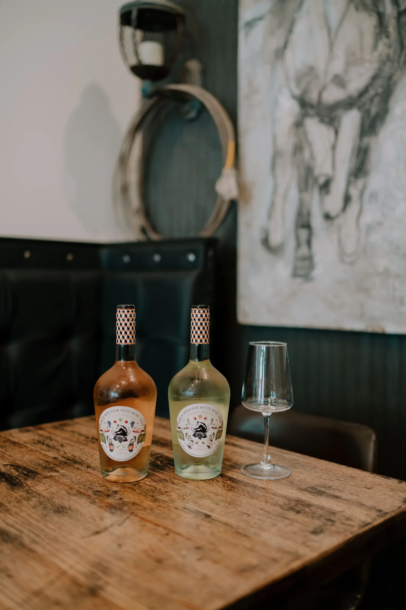
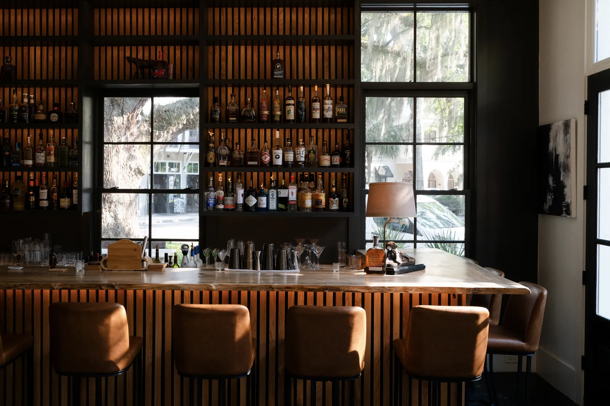
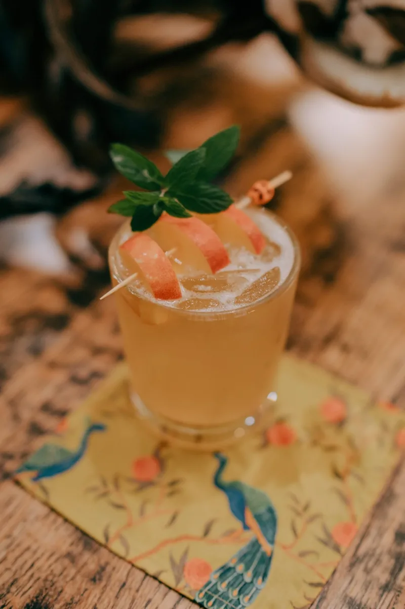

A horse, a block, and a good idea.
Criollo is the third door on one small stretch of Market Street in the village of Habersham — and the one that took the longest to get right.

What a criollo is

The Spanish brought horses to South America. What came back, generations later, was something else — the criollo: smaller, harder, able to cross a continent on grass and stubbornness.
The word came to mean anything born in the New World of Old World stock. Spanish parentage, South American character. That is more or less the menu: croquetas and anchovies from one side of the ocean, arepas and chimichurri from the other, all of it cooked in a small kitchen in South Carolina.
The horse on the door is not decoration. It is the whole thesis.
Melanie McCaffree grew up around horses in Kentucky.
She still trains them. She and her husband Brian keep a farm near the village, which is how a restaurant in Beaufort ended up named after a breed of South American stock horse.
It started with wine
The first door on the block was Corks on the Vine, a wine and cheese shop that opened in Habersham Marketplace in May 2020 — an idea hatched over a long Christmas evening the winter before.
Then a bistro
When the space next door came free, it became Bistro Ten in June 2021 — garden-to-plate lunches, wine dinners, Sunday suppers, and a courtyard strung with lights.
And then Criollo
Nine Market is the darker room — hats on the wall, bourbon on the shelves, a menu that runs from Andalusia to Caracas. Where Bistro Ten is a garden at noon, Criollo is a bar at night.
Same block, same hands
All of it sits within about thirty steps of itself. Guests who come for a glass at one often finish the night at the other — which was, more or less, the point.


Dark paint, warm light, and a wall of hats.
Leather banquettes, worn wood, brass, and tall windows that go from green to black over the course of dinner.
Out back there is a patio with a fireplace. Guests have been known to describe it, in writing, as the best part of the night.
“Such a departure from everything else in Beaufort.”Shannan Caldwell · Google
Come find out.
Dinner Tuesday through Saturday from 5:30. Lunch on Saturdays, 12 to 4.